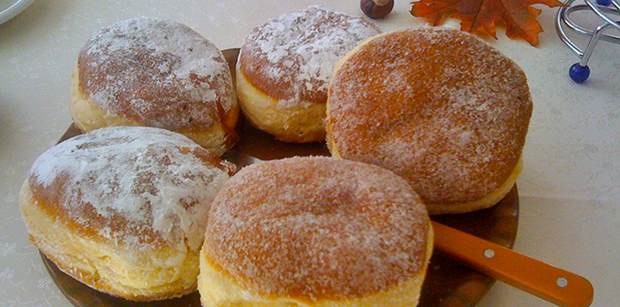
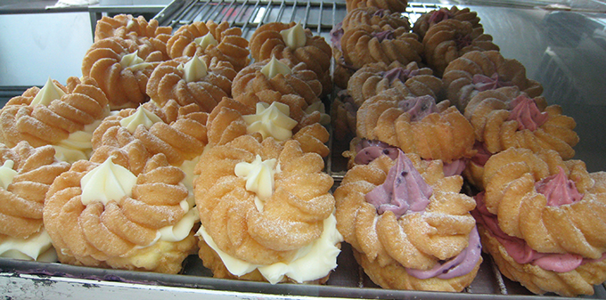
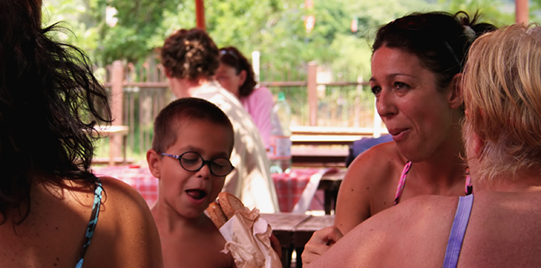
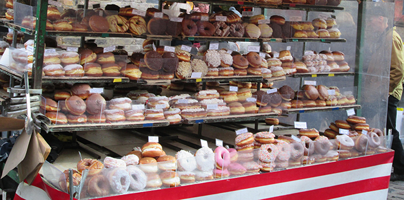
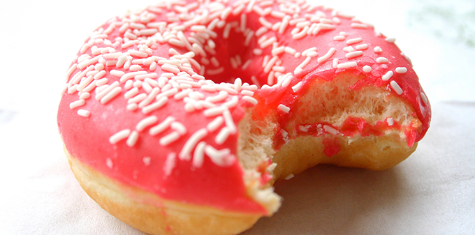

The finest in breakfast treats and coffees since 1971
Donut Delights has been serving C-U with the highest quality donuts and coffees since 1971. Nestled in downtown Urbana, Donut Delights has become a haven for “Gotta have it” breakfast treats. Our donuts are baked fresh twice daily and our coffee’s brewed every fifteen minutes. If you have never been to C-U’s hidden gem, you are missing out.




